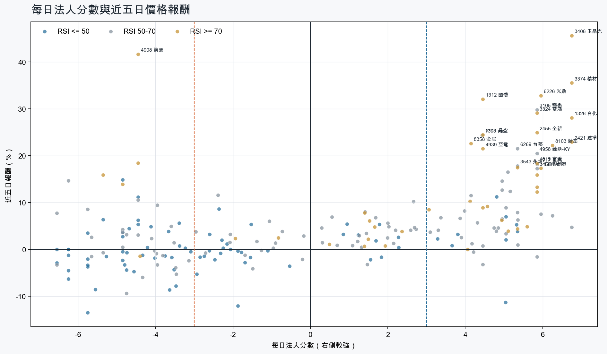
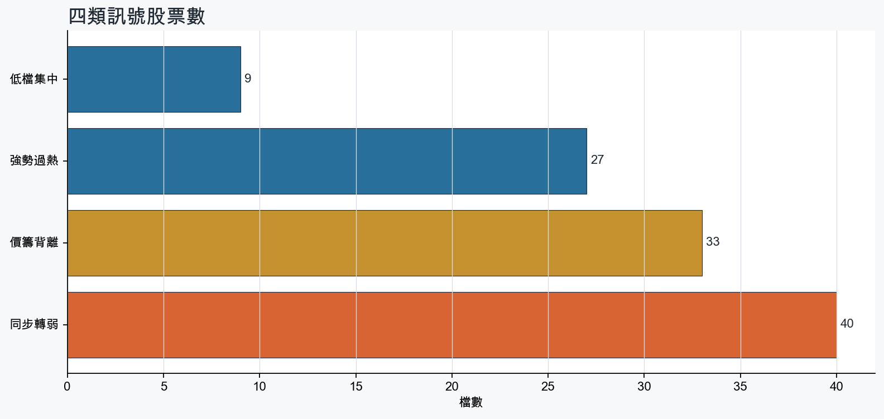
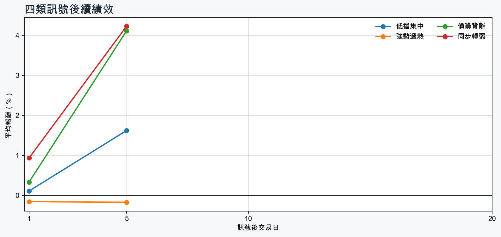

市場情緒偏多
近5日法人合計+3,422,931 張
篩選池上漲比例69.5%
籌碼好 / RSI低9 檔
籌碼差 / 價跌15 檔



MOOD × MONEY
情緒與籌碼雷達
熱度代表被討論程度；情緒分與法人方向分開計算。熱門不等於適合追價，樣本不足也不硬判多空。
| 股票 | 情緒 | 討論熱度 | 情緒 × 籌碼 | 情緒 × 基本面 |
|---|---|---|---|---|
| 3037 欣興低檔集中 | 情緒低迷 -53.1信心 100 | 10053 篇 / 10113 留言 / 3 則新聞 | 法人布局、市場悲觀法人分 +5.0 | 基本面佳、情緒悲觀基本面分 +3.6 |
| 1815 富喬強勢過熱 | 情緒高漲 +48.0信心 85 | 483 篇 / 67 留言 / 1 則新聞 | 情籌共振法人分 +5.8 | 基本面與情緒共振基本面分 +3.6 |
| 3645 達邁價籌背離 | 偏多 +28.5信心 53 | 421 篇 / 44 留言 / 0 則新聞 | 熱門但法人撤退法人分 -6.2 | 基本面與情緒分歧基本面分 +0.5 |
| 2455 全新強勢過熱 | 情緒高漲 +72.5信心 72 | 401 篇 / 26 留言 / 3 則新聞 | 情籌共振法人分 +5.8 | 基本面與情緒共振基本面分 +3.6 |
| 3406 玉晶光強勢過熱 | 情緒高漲 +67.2信心 67 | 401 篇 / 24 留言 / 3 則新聞 | 情籌共振法人分 +6.8 | 基本面與情緒共振基本面分 +3.0 |
| 5289 宜鼎同步轉弱 | 中性分歧 +9.0信心 62 | 381 篇 / 16 留言 / 3 則新聞 | 情籌混合法人分 -5.8 | 基本面與情緒分歧基本面分 +3.6 |
| 2605 新興同步轉弱 | 偏多 +29.7信心 30 | 250 篇 / 0 留言 / 3 則新聞 | 熱門但法人撤退法人分 -3.5 | 基本面與情緒共振基本面分 +3.6 |
| 6223 旺矽同步轉弱 | 偏多 +29.7信心 30 | 250 篇 / 0 留言 / 3 則新聞 | 熱門但法人撤退法人分 -5.8 | 基本面與情緒共振基本面分 +3.6 |
| 2426 鼎元價籌背離 | 偏多 +29.7信心 30 | 250 篇 / 0 留言 / 3 則新聞 | 熱門但法人撤退法人分 -4.5 | 基本面與情緒共振基本面分 +2.4 |
| 8105 凌巨價籌背離 | 偏空 -29.7信心 30 | 250 篇 / 0 留言 / 3 則新聞 | 情籌雙弱法人分 -4.8 | 基本面佳、情緒悲觀基本面分 +2.4 |
| 2327 國巨*價籌背離 | 中性分歧 +0.0信心 30 | 250 篇 / 0 留言 / 3 則新聞 | 情籌混合法人分 -4.7 | 基本面與情緒分歧基本面分 +3.6 |
| 2421 建準強勢過熱 | 中性分歧 +0.0信心 30 | 250 篇 / 0 留言 / 3 則新聞 | 情籌混合法人分 +6.8 | 基本面與情緒分歧基本面分 +3.6 |
01
籌碼好 / RSI低
優先研究基本面；法人續買且價格止穩時，才適合分批觀察。
| 股票 / 建議 | 每日法人分 | RSI / 價格 | 每週集保確認 | 基本面 | 情緒 / 情籌 | 近期消息 | 論壇討論 |
|---|---|---|---|---|---|---|---|
| 1608 華榮優先觀察 | +5.0法人 +7,855 張 / 4 天 | 45.75日 +2.0% | +3.36 pp1000張 +3.26 pp | 單月營收年增 +42.7%；累計營收年增 +19.4%；上半年 EPS 7.04仍需觀察下一期財報延續性來源：公開資訊觀測站 | 樣本不足 +0.0熱度 0 / 信心 0情緒樣本不足 | 近期沒有通過股票語境篩選的新聞 | 近期沒有明確提及本股的論壇樣本 |
| 3037 欣興優先觀察 | +5.0法人 +12,699 張 / 5 天 | 47.45日 -11.3% | +3.47 pp1000張 +2.58 pp | 單月營收年增 +43.7%；累計營收年增 +30.8%；上半年 EPS 11.70仍需觀察下一期財報延續性來源：公開資訊觀測站 | 情緒低迷 -53.1熱度 100 / 信心 100法人布局、市場悲觀 | 欣興僅跌停一天！「PCB女王」示警：別急接刀Yahoo股市 · 09/01量價榜抓到資金新焦點！欣興成交值竟達台積電2倍 穩懋爆量飆漲停udn.com · 09/01 | [新聞] 欣興最新聲明爭議非載板！三大外資定調「PTT Stock · 08-31 · 819 留言[新聞] ABF龍頭欣興爆檢調搜索！傳涉假帳、內線PTT Stock · 08-28 · 734 留言 |
| 1605 華新優先觀察 | +3.7法人 +20,080 張 / 4 天 | 41.15日 +0.8% | +3.37 pp1000張 +3.50 pp | 單月營收年增 +10.1%；累計營收年增 +1.0%；上半年 EPS 2.85上半年營益率 1.4%來源：公開資訊觀測站 | 樣本不足 +0.0熱度 0 / 信心 0情緒樣本不足 | 近期沒有通過股票語境篩選的新聞 | 近期沒有明確提及本股的論壇樣本 |
| 2312 金寶優先觀察 | +5.3法人 +11,569 張 / 5 天 | 46.95日 +5.3% | +1.35 pp1000張 +1.35 pp | 單月營收年增 +49.2%；累計營收年增 +1.2%；上半年 EPS 0.70上半年營益率 2.8%來源：公開資訊觀測站 | 樣本不足 +0.0熱度 0 / 信心 0情緒樣本不足 | 近期沒有通過股票語境篩選的新聞 | 近期沒有明確提及本股的論壇樣本 |
| 3712 永崴投控優先觀察 | +5.3法人 +2,962 張 / 4 天 | 39.55日 +3.8% | +0.76 pp1000張 -0.08 pp | 單月營收年增 +79.8%；上半年 EPS 2.11；上半年營益率 8.8%累計營收年增 -25.1%來源：公開資訊觀測站 | 樣本不足 +0.0熱度 0 / 信心 0情緒樣本不足 | 近期沒有通過股票語境篩選的新聞 | 近期沒有明確提及本股的論壇樣本 |
| 2353 宏碁優先觀察 | +3.3法人 +10,913 張 / 4 天 | 50.05日 +2.3% | +1.24 pp1000張 +1.35 pp | 單月營收年增 +21.9%；累計營收年增 +23.1%；上半年 EPS 0.96上半年營益率 1.6%來源：公開資訊觀測站 | 樣本不足 +0.0熱度 15 / 信心 10情緒樣本不足 | 宏碁價量齊揚收31.75元！千張大戶連月增、外資主力狂掃，籌碼集中度全解析理財周刊 · 09/01 | 近期沒有明確提及本股的論壇樣本 |
| 4763 材料*-KY優先觀察 | +4.8法人 +9,534 張 / 3 天 | 41.85日 +11.2% | -0.17 pp1000張 -0.18 pp | 單月營收年增 +32.1%；上半年 EPS 1.85；上半年營益率 41.7%累計營收年增 -25.0%來源：公開資訊觀測站 | 樣本不足 +0.0熱度 0 / 信心 0情緒樣本不足 | 近期沒有通過股票語境篩選的新聞 | 近期沒有明確提及本股的論壇樣本 |
| 2377 微星優先觀察 | +5.0法人 +10,611 張 / 4 天 | 34.05日 +6.9% | +0.79 pp1000張 +1.10 pp | 上半年 EPS 7.59單月營收年增 -0.0%；累計營收年增 -6.5%；上半年營益率 6.7%來源：公開資訊觀測站 | 偏多 +29.7熱度 25 / 信心 30情籌共振 | 微星EPS 3.55元超預期 2027獲利續攻Yahoo股市 · 08/16RTX Spark還沒上市就搶光！華碩、微星首批AI筆電傳售罄 急找NVIDIA追加PChome Online 新聞 · 09/01 | 近期沒有明確提及本股的論壇樣本 |
| 2886 兆豐金優先觀察 | +3.8法人 +69,063 張 / 5 天 | 49.05日 +3.2% | -0.35 pp1000張 -0.36 pp | 單月營收年增 +4.1%；累計營收年增 +16.7%仍需觀察下一期財報延續性來源：公開資訊觀測站 | 樣本不足 +0.0熱度 15 / 信心 10情緒樣本不足 | 擁華碩、長榮、兆豐金！00939連3配0.125元今最後買進日 4檔ETF年化配息率全曝光Yahoo股市 · 08/31 | 近期沒有明確提及本股的論壇樣本 |
02
籌碼好 / RSI高
趨勢強但不追價，等待量縮、RSI降溫或回測支撐。
| 股票 / 建議 | 每日法人分 | RSI / 價格 | 每週集保確認 | 基本面 | 情緒 / 情籌 | 近期消息 | 論壇討論 |
|---|---|---|---|---|---|---|---|
| 2421 建準等拉回，不追價 | +6.8法人 +18,378 張 / 5 天 | 75.75日 +22.9% | +3.39 pp1000張 +4.37 pp | 單月營收年增 +31.7%；累計營收年增 +20.3%；上半年 EPS 4.78仍需觀察下一期財報延續性來源：公開資訊觀測站 | 中性分歧 +0.0熱度 25 / 信心 30情籌混合 | 熱門股》外資連4買 建準攻頂stock.ltn.com.tw · 09/01〈焦點股〉建準下半年營運看旺 亮燈漲停股價創今年高點news.cnyes.com · 08/31 | 近期沒有明確提及本股的論壇樣本 |
| 2351 順德等拉回，不追價 | +5.8法人 +7,164 張 / 4 天 | 78.75日 +13.3% | +3.93 pp1000張 +3.73 pp | 單月營收年增 +54.0%；累計營收年增 +28.5%；上半年 EPS 2.82仍需觀察下一期財報延續性來源：公開資訊觀測站 | 樣本不足 +0.0熱度 0 / 信心 0情緒樣本不足 | 近期沒有通過股票語境篩選的新聞 | 近期沒有明確提及本股的論壇樣本 |
| 1815 富喬等拉回，不追價 | +5.8法人 +67,014 張 / 4 天 | 86.45日 +18.3% | +17.45 pp1000張 +15.88 pp | 單月營收年增 +68.1%；累計營收年增 +46.9%；上半年 EPS 2.24仍需觀察下一期財報延續性來源：公開資訊觀測站 | 情緒高漲 +48.0熱度 48 / 信心 85情籌共振 | 1815 富喬- 🥰週三南亞科華通富喬鼎元台化臻鼎合晶國巨穩懋台玻京元電強茂- 股市爆料同學會CMoney · 09/01 | Re: [標的] 1815富喬 籌碼洗到變乾淨飆股噴射多PTT Stock · 08-31 · 30 留言Re: [標的] 1815富喬 籌碼洗到變乾淨飆股噴射多PTT Stock · 08-28 · 27 留言 |
| 2313 華通等拉回，不追價 | +5.8法人 +23,834 張 / 4 天 | 78.75日 +15.9% | +4.23 pp1000張 +4.14 pp | 單月營收年增 +16.0%；累計營收年增 +13.6%；上半年 EPS 2.50仍需觀察下一期財報延續性來源：公開資訊觀測站 | 樣本不足 +0.0熱度 15 / 信心 10情緒樣本不足 | 2313 華通- 🥰籌碼火熱股；華通富喬鼎元臻鼎合晶國巨穩懋台玻京元電強茂- 股市爆料同學會CMoney · 09/01 | 近期沒有明確提及本股的論壇樣本 |
| 3324 雙鴻等拉回，不追價 | +5.8法人 +7,743 張 / 4 天 | 79.75日 +29.1% | +5.37 pp1000張 +1.41 pp | 單月營收年增 +116.7%；累計營收年增 +83.3%；上半年 EPS 23.01仍需觀察下一期財報延續性來源：公開資訊觀測站 | 中性分歧 +0.0熱度 25 / 信心 30情籌混合 | 雙鴻展望看更樂觀；明年營收增幅優今年- 新聞MoneyDJ · 09/01雙鴻今股價創新高，林育申：回我們一個公道TechNews 科技新報 · 09/01 | 近期沒有明確提及本股的論壇樣本 |
| 8103 瀚荃等拉回，不追價 | +6.2法人 +3,531 張 / 5 天 | 87.35日 +22.2% | +4.95 pp1000張 +2.71 pp | 單月營收年增 +34.3%；累計營收年增 +27.6%；上半年 EPS 2.75仍需觀察下一期財報延續性來源：公開資訊觀測站 | 偏多 +19.8熱度 21 / 信心 20情籌混合 | 【12:27 即時新聞】瀚荃(8103)股價勁揚至127元、漲幅6.72%，AI電源獲利強勢帶動主升段行情＋主力與外資買盤同步偏多支撐多頭結構CMoney投資網誌 · 09/01焦點股》瀚荃：買盤青睞 逆風漲停自由財經 · 08/31 | 近期沒有明確提及本股的論壇樣本 |
| 4939 亞電等拉回，不追價 | +4.5法人 +5,445 張 / 3 天 | 77.55日 +21.5% | +5.79 pp1000張 +4.86 pp | 單月營收年增 +36.8%；累計營收年增 +13.1%；上半年 EPS 0.53上半年營益率 7.0%來源：公開資訊觀測站 | 樣本不足 +0.0熱度 15 / 信心 10情緒樣本不足 | 11檔處置股現蹤！亞電、世紀、光鼎列新處置名單| 財經Newtalk新聞 · 09/01 | 近期沒有明確提及本股的論壇樣本 |
| 3141 晶宏等拉回，不追價 | +4.5法人 +3,215 張 / 3 天 | 72.15日 +24.5% | +6.49 pp1000張 +1.49 pp | 單月營收年增 +39.6%；累計營收年增 +16.0%；上半年 EPS 2.19仍需觀察下一期財報延續性來源：公開資訊觀測站 | 樣本不足 +9.9熱度 15 / 信心 10情緒樣本不足 | 【09:52 即時新聞】晶宏(3141)股價上漲逾9%，受IC設計族群資金輪動與電子標籤營收成長激勵，主力與外資買盤延續推升短線攻擊動能CMoney投資網誌 · 09/01 | 近期沒有明確提及本股的論壇樣本 |
| 2455 全新等拉回，不追價 | +5.8法人 +6,899 張 / 4 天 | 77.65日 +24.9% | +2.05 pp1000張 +0.70 pp | 單月營收年增 +45.1%；累計營收年增 +30.5%；上半年 EPS 2.20仍需觀察下一期財報延續性來源：公開資訊觀測站 | 情緒高漲 +72.5熱度 40 / 信心 72情籌共振 | 全新獲利／自結7月稅後純益年增236% 每股賺0.62元udn.com · 09/01全新「挾光通訊熱度」連2根漲停刷高 公告7月獲利年增236%ETtoday財經雲 · 09/01 | [新聞]台股矽光子持續噴出！全新、立碁連兩根漲PTT Stock · 09-01 · 26 留言 |
| 1727 中華化等拉回，不追價 | +5.3法人 +3,833 張 / 4 天 | 70.55日 +4.4% | +3.30 pp1000張 +0.60 pp | 單月營收年增 +32.5%；累計營收年增 +21.4%；上半年 EPS 0.66仍需觀察下一期財報延續性來源：公開資訊觀測站 | 樣本不足 +9.9熱度 15 / 信心 10情緒樣本不足 | 中華化上半年獲利翻倍 股價攻漲停經濟日報 · 08/17 | 近期沒有明確提及本股的論壇樣本 |
| 6226 光鼎等拉回，不追價 | +6.0法人 +6,282 張 / 5 天 | 80.35日 +32.8% | +4.60 pp1000張 +6.08 pp | 單月營收年增 +21.5%；累計營收年增 +6.4%；上半年 EPS 0.03上半年營益率 -4.1%來源：公開資訊觀測站 | 中性分歧 +0.0熱度 21 / 信心 20情籌混合 | 11檔處置股現蹤！亞電、世紀、光鼎列新處置名單| 財經Newtalk新聞 · 09/01【12:06 即時新聞】光鼎(6226)股價上漲6%，處置股題材持續發酵＋多頭格局延續吸引趨勢資金CMoney投資網誌 · 09/01 | 近期沒有明確提及本股的論壇樣本 |
| 3406 玉晶光等拉回，不追價 | +6.8法人 +8,061 張 / 5 天 | 90.75日 +45.7% | +5.55 pp1000張 -0.60 pp | 單月營收年增 +1.6%；累計營收年增 +14.2%；上半年 EPS 13.99仍需觀察下一期財報延續性來源：公開資訊觀測站 | 情緒高漲 +67.2熱度 40 / 信心 67情籌共振 | 玉晶光獲利靚 7月每股賺2.92元udn.com · 09/01南亞漲185%還輸它！「這光學大廠」90天狂飆209%、玉晶光噴45% 19檔注意股一次看Yahoo股市 · 09/01 | [情報] 3406 玉晶光 7月自結:2.92 連4漲停中PTT Stock · 08-31 · 24 留言 |
| 2357 華碩等拉回，不追價 | +4.6法人 +5,045 張 / 4 天 | 71.65日 +9.2% | +1.76 pp1000張 +2.62 pp | 單月營收年增 +53.3%；累計營收年增 +40.9%；上半年 EPS 38.83上半年營益率 7.1%來源：公開資訊觀測站 | 中性分歧 +0.0熱度 25 / 信心 30情籌混合 | 未上市先賣光！輝達 RTX Spark 掀搶購潮，華碩、微星急向輝達追單TechNews 科技新報 · 09/012357 華碩 - 續漲 ，站穩 1000 ，讚！ - 股市爆料同學會CMoney · 09/01 | 近期沒有明確提及本股的論壇樣本 |
| 1326 台化等拉回，不追價 | +6.8法人 +92,998 張 / 5 天 | 73.85日 +28.1% | -0.23 pp1000張 -0.46 pp | 單月營收年增 +34.2%；累計營收年增 +13.9%；上半年 EPS 2.11上半年營益率 3.0%來源：公開資訊觀測站 | 中性分歧 +0.0熱度 25 / 信心 30情籌混合 | 焦點股》台化：外資很捧場 股價狂奔自由財經 · 09/01【即時新聞】最新台化股價爆量亮燈，外資狂掃逾1.8萬張還能追嗎？CMoney · 09/01 | 近期沒有明確提及本股的論壇樣本 |
| 5314 世紀*等拉回，不追價 | +5.8法人 +6,735 張 / 4 天 | 84.05日 +12.2% | +0.88 pp1000張 +0.43 pp | 單月營收年增 +149.6%；累計營收年增 +159.9%；上半年 EPS 0.66仍需觀察下一期財報延續性來源：公開資訊觀測站 | 偏空 -29.7熱度 25 / 信心 30法人布局、市場悲觀 | 世紀*連吞2根跌停！網嘆：又要聖誕樹了自由財經 · 08/31世紀*上演「天地板」！連11根漲停後急殺跌停 網嘆：套殺標準股自由財經 · 08/30 | 近期沒有明確提及本股的論壇樣本 |
03
籌碼差 / 股價上漲
可能是事件行情或軋空；沒有籌碼改善前避免追高。
| 股票 / 建議 | 每日法人分 | RSI / 價格 | 每週集保確認 | 基本面 | 情緒 / 情籌 | 近期消息 | 論壇討論 |
|---|---|---|---|---|---|---|---|
| 4908 前鼎背離警戒，避免追高 | -4.5法人 -2,130 張 / 2 天 | 75.25日 +41.7% | -1.70 pp1000張 -2.00 pp | 單月營收年增 +51.6%；累計營收年增 +28.2%；上半年 EPS 1.42仍需觀察下一期財報延續性來源：公開資訊觀測站 | 偏多 +19.8熱度 21 / 信心 20情籌混合 | 統懋、前鼎、漢達再飆漲停！電子股聯發科、力旺、定穎投控齊亮燈信昌電、均華、磐儀攻頂鎖不住Yahoo股市 · 09/01【09:28 即時新聞】前鼎(4908)亮燈漲停至229.5元，AI光通訊題材發酵＋短線多方動能集中突破CMoney投資網誌 · 09/01 | 近期沒有明確提及本股的論壇樣本 |
| 5475 德宏背離警戒，避免追高 | -5.3法人 -2,208 張 / 1 天 | 73.95日 +15.9% | -15.54 pp1000張 -15.48 pp | 單月營收年增 +264.0%；累計營收年增 +149.9%；上半年 EPS 1.19仍需觀察下一期財報延續性來源：公開資訊觀測站 | 樣本不足 +0.0熱度 0 / 信心 0情緒樣本不足 | 近期沒有通過股票語境篩選的新聞 | 近期沒有明確提及本股的論壇樣本 |
| 3645 達邁背離警戒，避免追高 | -6.2法人 -6,468 張 / 0 天 | 55.05日 +14.7% | -0.78 pp1000張 +1.02 pp | 上半年 EPS 1.52；上半年營益率 21.3%單月營收年增 -32.6%；累計營收年增 -1.5%來源：公開資訊觀測站 | 偏多 +28.5熱度 42 / 信心 53熱門但法人撤退 | 近期沒有通過股票語境篩選的新聞 | [標的] 3645 達邁 多 蘋果首款摺疊機PTT Stock · 09-01 · 44 留言 |
| 5439 高技背離警戒，避免追高 | -4.8法人 -1,996 張 / 1 天 | 71.25日 +13.9% | +0.44 pp1000張 -4.26 pp | 單月營收年增 +4.5%；累計營收年增 +40.8%；上半年 EPS 8.15仍需觀察下一期財報延續性來源：公開資訊觀測站 | 樣本不足 +0.0熱度 0 / 信心 0情緒樣本不足 | 近期沒有通過股票語境篩選的新聞 | 近期沒有明確提及本股的論壇樣本 |
| 2426 鼎元背離警戒，避免追高 | -4.5法人 -5,302 張 / 2 天 | 80.75日 +18.4% | +10.98 pp1000張 +12.02 pp | 單月營收年增 +36.3%；累計營收年增 +2.3%；上半年 EPS 0.28上半年營益率 5.8%來源：公開資訊觀測站 | 偏多 +29.7熱度 25 / 信心 30熱門但法人撤退 | 矽光子狂燒「這7檔」股價齊亮燈！鼎元、全新齊收歷史新高 大立光同寫史高慘收黑Yahoo股市 · 09/012426 鼎元- 今日個股亂看- 股市爆料同學會CMoney · 09/01 | 近期沒有明確提及本股的論壇樣本 |
| 8105 凌巨背離警戒，避免追高 | -4.8法人 -4,915 張 / 1 天 | 40.75日 +14.9% | +4.04 pp1000張 +4.61 pp | 單月營收年增 +11.9%；累計營收年增 +0.5%；上半年 EPS 0.59上半年營益率 1.2%來源：公開資訊觀測站 | 偏空 -29.7熱度 25 / 信心 30情籌雙弱 | 凌巨恢復交易 首日漲停udn.com · 08/27凌巨財報難產明起停牌！ 股價連2跌停「爆量搶買」Yahoo股市 · 08/17 | 近期沒有明確提及本股的論壇樣本 |
| 4906 正文背離警戒，避免追高 | -4.5法人 -7,506 張 / 2 天 | 58.25日 +10.6% | -0.78 pp1000張 -1.13 pp | 單月營收年增 +32.2%累計營收年增 -21.5%；上半年 EPS -0.42；上半年營益率 -4.8%來源：公開資訊觀測站 | 中性分歧 +0.0熱度 21 / 信心 20情籌混合 | 4906 正文 - 美國加大力度控管紅色供應鏈對正文資通訊是大大利多！ - 股市爆料同學會CMoney · 08/30【12:51 即時新聞】正文(4906)股價勁揚至38.55元，上漲6.49%，受WiFi毫米波FWA題材與營收轉強激勵，短線量價結構改善吸引資金迴流CMoney投資網誌 · 09/01 | 近期沒有明確提及本股的論壇樣本 |
| 1597 直得背離警戒，避免追高 | -4.5法人 -1,638 張 / 2 天 | 46.65日 +11.2% | -0.25 pp1000張 +2.45 pp | 單月營收年增 +47.8%；累計營收年增 +44.8%；上半年 EPS 1.30仍需觀察下一期財報延續性來源：公開資訊觀測站 | 樣本不足 +0.0熱度 15 / 信心 10情緒樣本不足 | 【13:15 即時新聞】直得(1597)股價上漲逾5%，CPO與半導體檢測題材持續發酵＋前高附近換手及主力調節成盤面關鍵CMoney投資網誌 · 09/01 | 近期沒有明確提及本股的論壇樣本 |
| 4989 榮科背離警戒，避免追高 | -4.5法人 -2,273 張 / 2 天 | 40.15日 +6.2% | -18.38 pp1000張 -18.34 pp | 單月營收年增 +105.4%；累計營收年增 +68.9%上半年 EPS -0.67；上半年營益率 -5.1%來源：公開資訊觀測站 | 樣本不足 +0.0熱度 0 / 信心 0情緒樣本不足 | 近期沒有通過股票語境篩選的新聞 | 近期沒有明確提及本股的論壇樣本 |
| 6147 頎邦背離警戒，避免追高 | -5.8法人 -9,272 張 / 0 天 | 64.55日 +8.6% | -0.55 pp1000張 -0.35 pp | 單月營收年增 +39.2%；累計營收年增 +20.9%；上半年 EPS 1.87仍需觀察下一期財報延續性來源：公開資訊觀測站 | 偏多 +19.8熱度 21 / 信心 20情籌混合 | 順達、頎邦潛力足 法人喊買中時新聞網 · 09/01光通訊帶動金凸塊結構性成長 法人喊買頎邦udn.com · 09/01 | 近期沒有明確提及本股的論壇樣本 |
| 3090 日電貿背離警戒，避免追高 | -4.8法人 -3,206 張 / 1 天 | 52.05日 +4.2% | -5.92 pp1000張 -5.87 pp | 單月營收年增 +66.6%；累計營收年增 +28.8%；上半年 EPS 4.91仍需觀察下一期財報延續性來源：公開資訊觀測站 | 樣本不足 +0.0熱度 15 / 信心 10情緒樣本不足 | 【日電貿法說會重點內容備忘錄】未來展望趨勢 20260811富果直送 · 08/11 | 近期沒有明確提及本股的論壇樣本 |
| 2375 凱美背離警戒，避免追高 | -4.8法人 -3,390 張 / 1 天 | 50.05日 +3.7% | -3.90 pp1000張 -6.46 pp | 單月營收年增 +37.9%；累計營收年增 +12.7%；上半年 EPS 1.85上半年營益率 7.4%來源：公開資訊觀測站 | 樣本不足 +0.0熱度 0 / 信心 0情緒樣本不足 | 近期沒有通過股票語境篩選的新聞 | 近期沒有明確提及本股的論壇樣本 |
| 8033 雷虎背離警戒，避免追高 | -4.8法人 -2,944 張 / 1 天 | 57.05日 +3.6% | -4.56 pp1000張 -3.98 pp | 累計營收年增 +7.4%；上半年 EPS 0.62單月營收年增 -9.5%；上半年營益率 -0.3%來源：公開資訊觀測站 | 樣本不足 +0.0熱度 0 / 信心 0情緒樣本不足 | 近期沒有通過股票語境篩選的新聞 | 近期沒有明確提及本股的論壇樣本 |
| 2327 國巨*背離警戒，避免追高 | -4.7法人 -19,716 張 / 1 天 | 44.75日 +4.4% | -2.92 pp1000張 -3.20 pp | 單月營收年增 +51.5%；累計營收年增 +32.5%；上半年 EPS 8.48仍需觀察下一期財報延續性來源：公開資訊觀測站 | 中性分歧 +0.0熱度 25 / 信心 30情籌混合 | 2327 國巨* - 短打成功！有賺錢就很開薰了🍀 - 股市爆料同學會CMoney · 09/01【零股排行榜】盤中零股排行榜TOP 20｜0050 元大台灣50、2327 國巨*、00981A 主動統一台股增長、3711 日月光投控、1303 南亞 (0831)｜豐雲學堂2026 年 08 月sinotrade.com.tw · 09/01 | 近期沒有明確提及本股的論壇樣本 |
| 6449 鈺邦背離警戒，避免追高 | -4.5法人 -1,533 張 / 2 天 | 46.25日 +5.4% | -2.28 pp1000張 +0.73 pp | 單月營收年增 +34.8%；累計營收年增 +24.2%；上半年 EPS 4.42仍需觀察下一期財報延續性來源：公開資訊觀測站 | 樣本不足 +0.0熱度 0 / 信心 0情緒樣本不足 | 近期沒有通過股票語境篩選的新聞 | 近期沒有明確提及本股的論壇樣本 |
04
籌碼差 / 股價下跌
籌碼與價格同弱，原則上迴避，等待法人與大戶同時回補。
| 股票 / 建議 | 每日法人分 | RSI / 價格 | 每週集保確認 | 基本面 | 情緒 / 情籌 | 近期消息 | 論壇討論 |
|---|---|---|---|---|---|---|---|
| 6919 康霈*迴避，等待籌碼翻正 | -5.8法人 -24,531 張 / 0 天 | 29.25日 -13.6% | +0.13 pp1000張 +0.18 pp | 尚無明確成長訊號單月營收年增 -100.0%；累計營收年增 -82.2%；上半年 EPS -0.21來源：公開資訊觀測站 | 偏空 -19.8熱度 21 / 信心 20情籌混合 | 6919 康霈* - 8/31 法說新增了什麼？（長文慎入） - 股市爆料同學會CMoney · 09/01《外資》賣超股：京元電子、國巨*、康霈*富聯網 · 09/01 | 近期沒有明確提及本股的論壇樣本 |
| 3209 全科迴避，等待籌碼翻正 | -6.2法人 -5,918 張 / 0 天 | 23.45日 -6.3% | -3.44 pp1000張 -1.98 pp | 單月營收年增 +47.9%；累計營收年增 +44.9%；上半年 EPS 3.28上半年營益率 3.0%來源：公開資訊觀測站 | 樣本不足 +0.0熱度 0 / 信心 0情緒樣本不足 | 近期沒有通過股票語境篩選的新聞 | 近期沒有明確提及本股的論壇樣本 |
| 6176 瑞儀迴避，等待籌碼翻正 | -3.5法人 -2,288 張 / 1 天 | 5.05日 -7.8% | -3.85 pp1000張 -4.16 pp | 上半年 EPS 2.81；上半年營益率 10.1%單月營收年增 -9.5%；累計營收年增 -6.5%來源：公開資訊觀測站 | 樣本不足 +0.0熱度 15 / 信心 10情緒樣本不足 | 6176 瑞儀- 瑞姨已經ICQ了 - 股市爆料同學會CMoney · 08/31 | 近期沒有明確提及本股的論壇樣本 |
| 3702 大聯大迴避，等待籌碼翻正 | -3.6法人 -8,694 張 / 1 天 | 21.65日 -8.6% | -1.57 pp1000張 -1.71 pp | 單月營收年增 +90.8%；累計營收年增 +59.9%；上半年 EPS 8.42上半年營益率 2.6%來源：公開資訊觀測站 | 偏多 +19.8熱度 21 / 信心 20情籌混合 | 3702 大聯大- 高營收也帶小弟一起飛升160吧！ - 股市爆料同學會CMoney · 09/01《投信買超10-7》盟立(332)、長興(301)、大聯大(300)富聯網 · 09/01 | 近期沒有明確提及本股的論壇樣本 |
| 3078 僑威迴避，等待籌碼翻正 | -5.5法人 -1,708 張 / 0 天 | 19.35日 -8.6% | +0.47 pp1000張 +0.47 pp | 上半年 EPS 1.02單月營收年增 -49.6%；累計營收年增 -46.6%；上半年營益率 7.0%來源：公開資訊觀測站 | 樣本不足 +0.0熱度 0 / 信心 0情緒樣本不足 | 近期沒有通過股票語境篩選的新聞 | 近期沒有明確提及本股的論壇樣本 |
| 8996 高力迴避，等待籌碼翻正 | -6.5法人 -3,539 張 / 0 天 | 50.45日 -3.3% | -3.35 pp1000張 -6.14 pp | 單月營收年增 +57.6%；累計營收年增 +115.4%；上半年 EPS 8.69仍需觀察下一期財報延續性來源：公開資訊觀測站 | 樣本不足 +0.0熱度 0 / 信心 0情緒樣本不足 | 近期沒有通過股票語境篩選的新聞 | 近期沒有明確提及本股的論壇樣本 |
| 2609 陽明迴避，等待籌碼翻正 | -4.8法人 -42,503 張 / 2 天 | 60.75日 -9.4% | +4.97 pp1000張 +4.85 pp | 單月營收年增 +34.6%；累計營收年增 +5.8%；上半年 EPS 2.05上半年營益率 7.6%來源：公開資訊觀測站 | 樣本不足 +0.0熱度 15 / 信心 10情緒樣本不足 | 【Hot台股】陽明翻紅爆量6萬張！網喊「航運現在才想起自己是反一」 分析師：追價審慎Yahoo股市 · 08/18 | 近期沒有明確提及本股的論壇樣本 |
| 5388 中磊迴避，等待籌碼翻正 | -6.2法人 -3,877 張 / 0 天 | 10.45日 +0.0% | -7.22 pp1000張 -6.17 pp | 單月營收年增 +51.3%；累計營收年增 +56.9%；上半年 EPS 2.59上半年營益率 3.1%來源：公開資訊觀測站 | 偏多 +19.8熱度 21 / 信心 20情籌混合 | 中磊法說變法會 股價下跌逾9%經濟日報 · 08/12〈中磊法說〉董座直言Q2營收成長是反映記憶體漲價的「虛胖」 毛利率承壓news.cnyes.com · 08/11 | 近期沒有明確提及本股的論壇樣本 |
| 4707 磐亞迴避，等待籌碼翻正 | -4.3法人 -3,010 張 / 1 天 | 50.25日 -6.0% | +0.55 pp1000張 +1.13 pp | 上半年 EPS 0.69單月營收年增 -17.0%；累計營收年增 -9.3%；上半年營益率 -4.0%來源：公開資訊觀測站 | 樣本不足 +0.0熱度 0 / 信心 0情緒樣本不足 | 近期沒有通過股票語境篩選的新聞 | 近期沒有明確提及本股的論壇樣本 |
| 2605 新興迴避，等待籌碼翻正 | -3.5法人 -2,647 張 / 1 天 | 59.55日 -5.3% | -0.49 pp1000張 -1.68 pp | 單月營收年增 +36.3%；累計營收年增 +35.1%；上半年 EPS 3.67仍需觀察下一期財報延續性來源：公開資訊觀測站 | 偏多 +29.7熱度 25 / 信心 30熱門但法人撤退 | 外資上周買超新興亞洲 越南單周漲幅3.6%表現最強、台股漲2.4%居次經濟日報 · 09/01短債、新興債各擁利基法人青睞- 日報ctee.com.tw · 08/31 | 近期沒有明確提及本股的論壇樣本 |
| 3033 威健迴避，等待籌碼翻正 | -5.8法人 -6,872 張 / 0 天 | 18.75日 -3.7% | -1.71 pp1000張 +0.53 pp | 單月營收年增 +78.7%；累計營收年增 +33.0%；上半年 EPS 3.38上半年營益率 3.6%來源：公開資訊觀測站 | 樣本不足 +0.0熱度 0 / 信心 0情緒樣本不足 | 近期沒有通過股票語境篩選的新聞 | 近期沒有明確提及本股的論壇樣本 |
| 5289 宜鼎迴避，等待籌碼翻正 | -5.8法人 -1,560 張 / 0 天 | 45.85日 -2.1% | -2.27 pp1000張 -1.44 pp | 單月營收年增 +636.5%；累計營收年增 +548.8%；上半年 EPS 166.45仍需觀察下一期財報延續性來源：公開資訊觀測站 | 中性分歧 +9.0熱度 38 / 信心 62情籌混合 | 宜鼎季賺10股本不夠！Q3估海賺11股本法人喊買卻砍價「貓膩在這裡」 - 上市櫃旺得富理財網 · 08/30宜鼎法說／Edge AI 全棧佈局驅動2025年營收創歷史新高｜股市話題｜豐雲學堂 2026 年 09 月sinotrade.com.tw · 08/21 | Re: [標的] 5289宜鼎/討論PTT Stock · 08-28 · 16 留言 |
| 9914 美利達迴避，等待籌碼翻正 | -4.6法人 -2,103 張 / 0 天 | 31.95日 -4.8% | +0.25 pp1000張 -1.47 pp | 上半年 EPS 2.15；上半年營益率 8.5%單月營收年增 -1.1%；累計營收年增 -13.2%來源：公開資訊觀測站 | 樣本不足 +0.0熱度 0 / 信心 0情緒樣本不足 | 近期沒有通過股票語境篩選的新聞 | 近期沒有明確提及本股的論壇樣本 |
| 3596 智易迴避，等待籌碼翻正 | -6.2法人 -2,940 張 / 0 天 | 28.65日 +0.0% | -4.12 pp1000張 -3.80 pp | 單月營收年增 +7.7%；累計營收年增 +2.8%；上半年 EPS 6.50上半年營益率 6.6%來源：公開資訊觀測站 | 樣本不足 +0.0熱度 15 / 信心 10情緒樣本不足 | 3596 智易- 外資為何一路賣? - 股市爆料同學會CMoney · 08/31 | 近期沒有明確提及本股的論壇樣本 |
| 6223 旺矽迴避，等待籌碼翻正 | -5.8法人 -1,578 張 / 0 天 | 30.95日 -3.4% | +0.16 pp1000張 +0.36 pp | 單月營收年增 +66.5%；累計營收年增 +52.3%；上半年 EPS 28.08仍需觀察下一期財報延續性來源：公開資訊觀測站 | 偏多 +29.7熱度 25 / 信心 30熱門但法人撤退 | 6223 旺矽- 探針卡題材加持，旺矽是否關鍵突破即將來臨？ - 股市爆料同學會CMoney · 09/01【11:20 即時新聞】旺矽(6223)股價上攻漲逾7%，AI高階測試需求＋短線籌碼空方下買盤回補CMoney投資網誌 · 09/01 | 近期沒有明確提及本股的論壇樣本 |
BACKTEST
長期規律追蹤
每次訊號後自動補算1、5、10、20個交易日報酬；樣本不足時不做結論。

| 訊號組別 | 1日 | 5日 | 10日 | 20日 |
|---|---|---|---|---|
| 低檔集中 | +0.11%勝率 38% / n=32 | +1.62%勝率 60% / n=15 | -資料累積中 | -資料累積中 |
| 強勢過熱 | -0.16%勝率 37% / n=134 | -0.17%勝率 37% / n=71 | -資料累積中 | -資料累積中 |
| 價籌背離 | +0.33%勝率 47% / n=152 | +4.11%勝率 66% / n=35 | -資料累積中 | -資料累積中 |
| 同步轉弱 | +0.93%勝率 56% / n=235 | +4.22%勝率 72% / n=127 | -資料累積中 | -資料累積中 |
SENTIMENT
市場消息溫度
新聞與公開論壇只作為情緒代理變數；反諷、同溫層和熱門事件都可能造成偏差，因此同步顯示樣本與信心度。
- 【盤前】外資投信殺紅眼 狠砍「這大廠」1.7萬張！59萬股東Uber車聚 - 三立新聞網SETN.com三立新聞網SETN.com
- 外資投信砍這檔1.7萬張 59萬人Uber車聚 - 鏡週刊Mirror Media鏡週刊Mirror Media
- 三大法人倒貨267億！ 投信賣超榜上竟「沒欣興」 網嘆：很難賣啊 - 東森電視東森電視
- 3大變數牽動台股！外資投信聯手轉進航運、金融 15檔季底作帳股出列- 日報 - ctee.com.twctee.com.tw
- 【0818台股盤前】外資狂買454億抗投信賣壓 貨櫃三雄與光通訊攜手強攻，「營收亮眼法人買」標的萬潤、聯鈞、致茂 - news.cnyes.comnews.cnyes.com
- 投信、外資都在買 台股卻收黑？ 網嘆：沒人要玩了 - Yahoo股市Yahoo股市
- 外資轉賣台股143億元終止連3買 賣超前3名皆ETF - 經濟日報經濟日報
- 台股少見外資買、投信賣 貨運三雄領漲、慧洋KY創4年多來新高 - 信傳媒信傳媒